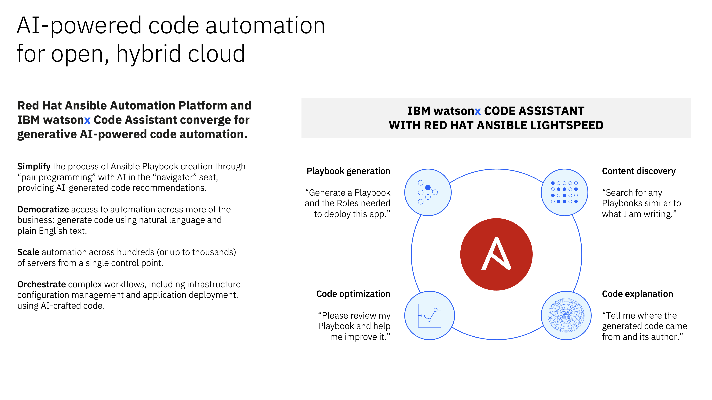
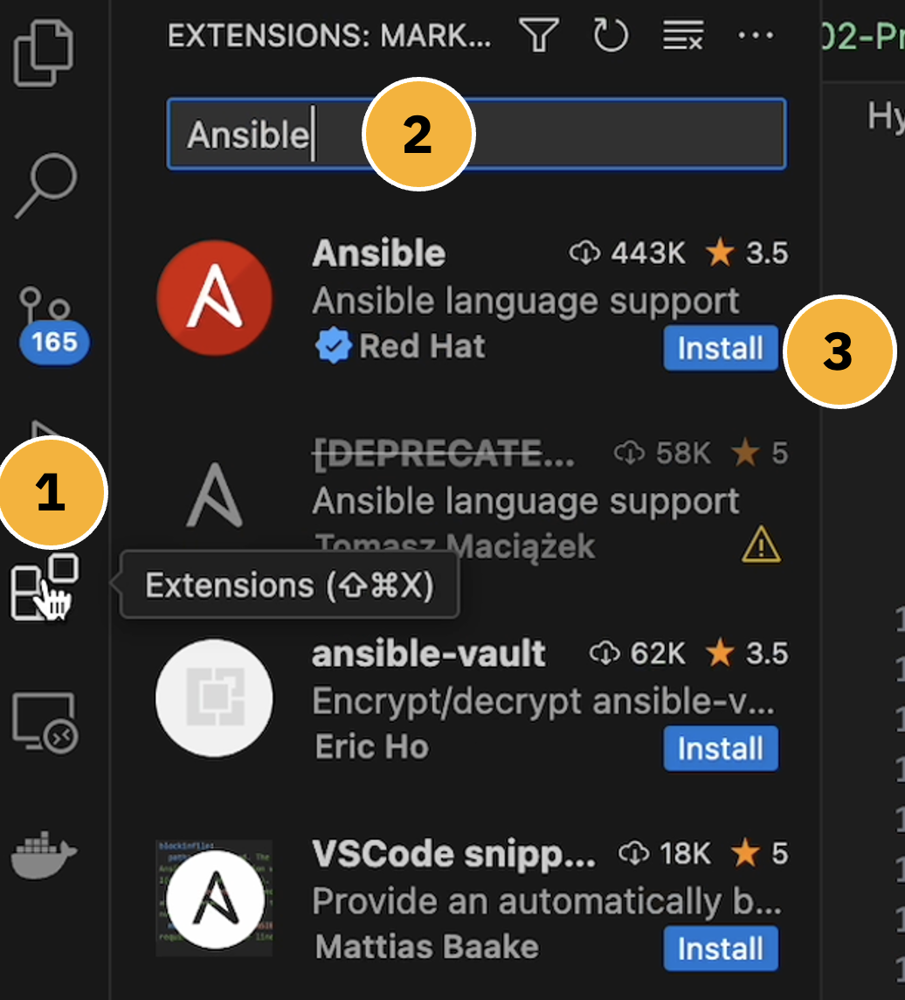

ACKNOWLEDGEMENTS
Special thanks to Craig Brandt and other colleagues from the Red Hat team for preparing the sample Ansible Playbooks for the Technical Preview of IBM watsonx Code Assistant for Red Hat Ansible Lightspeed.
Generally speaking, Generative AI is the talk of the town in 2023 — and likely will remain so for years to come.
What began to simmer in the early 2020s as excitement within academic and technology community around around transformers and language models has today exploded into a firestorm of interest and investment across nearly every industry, institution, and government. For the first time at scale, everyday consumers have access to artificial intelligence on their phones and through their web browsers. Likewise, enterprise and business leaders no longer view AI as a topic of interest, but as a critical imperative to success in the future economy.
Foundation Models— a term coined by Stanford University —are built using a specific kind of neural network architecture, called a Transformer. The Transformer helps the Foundation Model understand unlabeled data and turn an input into an output. The most consequential manifestation of this technology so far is what we know today as "Generative AI."
So what is Generative AI? The vast topic refers to a subset of AI techniques and methodologies that are designed to generate new content — in other words, AI applied towards the creation of novel contents in the form of images, text, voice, or even code. This sharply differs from the goals of more "traditional" AI models of the past, which have primarily been focused on the analysis and classification (labeling) of information.
Historically, these early pioneering techniques of AI models have progressed from simple probabilistic models into increasingly sophisticated systems, building upon concepts like neural networks and deep learning techniques. Today, technologies like Generative AI showcase not only the ability to analysis, but tremendous capacity for creation. Even the creation of application code and automation tasks.
The advent of Foundation Models and Generative AI, given their remarkable performance and extensibility to a wide range of tasks, is bringing an inflection point in AI. Recognizing the significance of the moment, IBM enterprise clients are actively evaluating and seeking to incorporate foundation models into critical business workflows for applications involving generation, summarization, classification, and so many other use cases.

The notion of automating the generation of Ansible Playbook code with AI stems from the challenges and bottlenecks often faced by developers tasked with traditional, manual creation of Playbooks.
These individuals must craft precise, error-free Playbooks which are potentially automation jobs across vast collections of assets or hardware. One of the benefits of automation is being able to perform such tasks at-scale; conversely, this also poses one of the greatest risks of automation — that when things fail, they can fail rapidly and across vast swathes of IT estate. It should come as no surprise, then, that authoring Playbooks often demands technical expertise and a deep understanding of the targeted systems and services which Ansible is to automate. If you recollect the founding philosophies of Red Hat Ansible— human-readable automation jobs, the democratization of automation to non-technical audiences —you might think the practicalities of manually creating Ansible Playbooks is antithetical to Ansible's potential. And you would be correct in that logic.
Generative AI, especially models like GPT, have recently demonstrated proficiency in creating syntactically correct and contextually relevant application code in a variety of programming languages. If trained on a large dataset of Ansible Playbooks, Generative AI models can be fine-tuned to understand the nuances of Playbook syntax and structure. An enterprise organization with dozens or hundreds of Playbooks within their IT estate today would have a rich corpus of training data on-hand that could be used to fine-tune AI models that are tailored to the automation needs and programming style/standards of that particular company. As we will see later, productized versions of the Generative AI models can provide a natural language prompt or a specific description of the desired task to users — who in turn can utilize these models for generating the necessary Playbook code. For example, a user might describe a desired system state in plain language ("I want a Playbook to install and start the Apache web server") and the model would generate the appropriate Ansible tasks for a Playbook.
All of this achieved without physically writing code or requiring much programming expertise. Not only does this speed up the automation process by cutting the time needed to author Playbooks, but it also democratizes access to automation in general. Even those within the company with limited Ansible or programming expertise will be able produce effective Playbooks. There are plenty of caveats of course, and thorough validation and testing will be needed to safeguard against the at-scale automation disaster scenarios that were mentioned previously. However, the productivity gains and broadening of skillsets within an organization can be tremendous. And as a whole, Generative AI brings the original goals of Red Hat Ansible Automation Platform (the democratization of automation for everything) that much closer to a reality.

The material covered in this Level 3 coursework will prepare IBM and business partner technical sellers with the skills necessary to demonstrate Ansible Playbook task creation using the generative AI capabilities of IBM watsonx Code Assistant for Red Hat Ansible Lightspeed.
A client demo-ready Technical Preview is available free of charge through the open source community, which you will make use of as well for this hands-on learning via extensions in VS Code (Visual Studio Code) on your local machine. This service uses, among other data, roles and collections that are available through the Red Hat community website, Ansible Galaxy.
The documentation within this Level 3 lab will cover how to use set up Code VS on a local machine (macOS or Windows) with an extension for IBM watsonx Code Assistant for Red Hat Ansible Lightspeed. You will then leverage the generative AI content recommendations for creating a variety of Ansible Playbooks for automating cloud-based and infrastructure-based automation tasks, such as:
-
Install and configure Cockpit for Ansible
-
Preparing an AWS and Azure cloud environment
-
Provisioning an AWS EC2 instance
-
Provisioning an Azure virtual machine (VM)
-
Run a Podman 'pgadmin' container
-
Deploy and start a PostgreSQL database server
These short demonstrations will go beyond simply giving you hands-on experience with Ansible Lightspeed's generative AI capabilities for Ansible Playbook task creation. In-depth explanations accomanying the Playbooks will also explain:
- The integrations that Ansible Lightspeed and IBM watsonx provide in terms of content tooling
- How Ansible Lightspeed natural language prompts, as well as the Ansible Playbook contents, to create contextually-aware code suggestions for Ansible Tasks
- Pre-processing and post-processing capabilities that refine the generative AI suggestions into syntactically correct code (adherent to best practices)
- How Ansible Lightspeed provides "explainability" and source content matching attribution for all AI-generated content
Ahead, we will cover the pre-requisites for getting started with the hands-on material, as well as outline the evaluation criteria for IBM technical sellers and business partners.